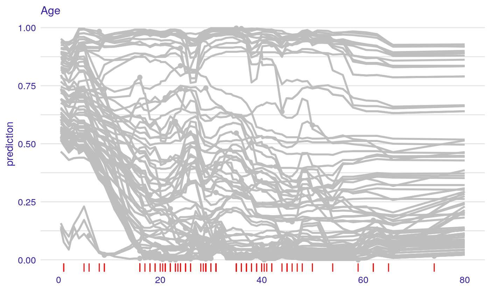

Adds a Layer with Observations to a Profile Plot
Function 'show_observations' adds a layer to a plot created with 'plot.ceteris_paribus_explainer' for selected observations. Various parameters help to decide what should be plotted, profiles, aggregated profiles, points or rugs.
show_observations(x, ..., size = 2, alpha = 1, color = "#371ea3", only_numerical = TRUE, variables = NULL)
Arguments
| x | a ceteris paribus explainer produced with function `ceteris_paribus()` |
|---|---|
| ... | other explainers that shall be plotted together |
| size | a numeric. Size of lines to be plotted |
| alpha | a numeric between 0 and 1. Opacity of lines |
| color | a character. Either name of a color or name of a variable that should be used for coloring |
| only_numerical | a logical. If TRUE then only numerical variables will be plotted. If FALSE then only categorical variables will be plotted. |
| variables | if not NULL then only `variables` will be presented |
Value
a ggplot2 layer
Examples
library("DALEX")library("titanic") library("randomForest") titanic_small <- titanic_train[,c("Survived", "Pclass", "Sex", "Age", "SibSp", "Parch", "Fare", "Embarked")] titanic_small$Survived <- factor(titanic_small$Survived) titanic_small$Sex <- factor(titanic_small$Sex) titanic_small$Embarked <- factor(titanic_small$Embarked) titanic_small <- na.omit(titanic_small) rf_model <- randomForest(Survived ~ Pclass + Sex + Age + SibSp + Parch + Fare + Embarked, data = titanic_small) explainer_rf <- explain(rf_model, data = titanic_small, y = titanic_small$Survived == "1", label = "RF")#> Preparation of a new explainer is initiated #> -> model label : RF #> -> data : 714 rows 8 cols #> -> target variable : 714 values #> -> predict function : yhat.randomForest will be used (default) #> -> predicted values : numerical, min = 0 , mean = 0.3636947 , max = 1 #> -> residual function : difference between y and yhat (default) #> -> residuals : numerical, min = -0.818 , mean = 0.04246779 , max = 0.964 #> A new explainer has been created!selected_passangers <- select_sample(titanic_small, n = 100) cp_rf <- ceteris_paribus(explainer_rf, selected_passangers) cp_rf#> Top profiles : #> Survived Pclass Sex Age SibSp Parch Fare Embarked _yhat_ _vname_ #> 652 0 2 female 18 0 1 23.0000 S 0.984 Survived #> 652.1 1 2 female 18 0 1 23.0000 S 0.984 Survived #> 757 0 3 male 28 0 0 7.7958 S 0.030 Survived #> 757.1 1 3 male 28 0 0 7.7958 S 0.030 Survived #> 510 0 3 male 26 0 0 56.4958 S 0.570 Survived #> 510.1 1 3 male 26 0 0 56.4958 S 0.570 Survived #> _ids_ _label_ #> 652 652 RF #> 652.1 652 RF #> 757 757 RF #> 757.1 757 RF #> 510 510 RF #> 510.1 510 RF #> #> #> Top observations: #> Survived Pclass Sex Age SibSp Parch Fare Embarked _yhat_ _label_ #> 652 1 2 female 18 0 1 23.0000 S 0.984 RF #> 757 0 3 male 28 0 0 7.7958 S 0.030 RF #> 510 1 3 male 26 0 0 56.4958 S 0.570 RF #> 823 0 1 male 38 0 0 0.0000 S 0.054 RF #> 571 1 2 male 62 0 0 10.5000 S 0.148 RF #> 524 1 1 female 44 0 1 57.9792 C 0.992 RF #> _ids_ #> 652 1 #> 757 2 #> 510 3 #> 823 4 #> 571 5 #> 524 6plot(cp_rf, variables = "Age", color = "grey") + show_observations(cp_rf, variables = "Age", color = "grey") + show_rugs(cp_rf, variables = "Age", color = "red")